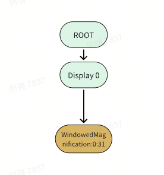
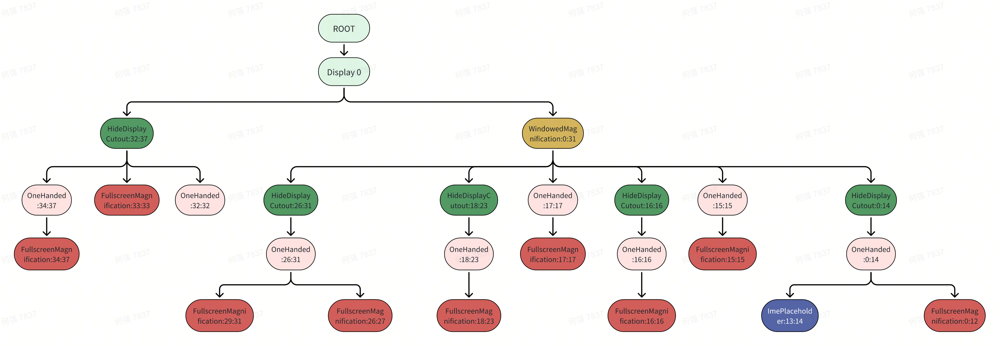
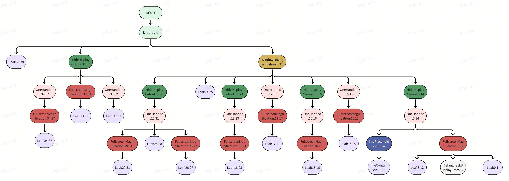
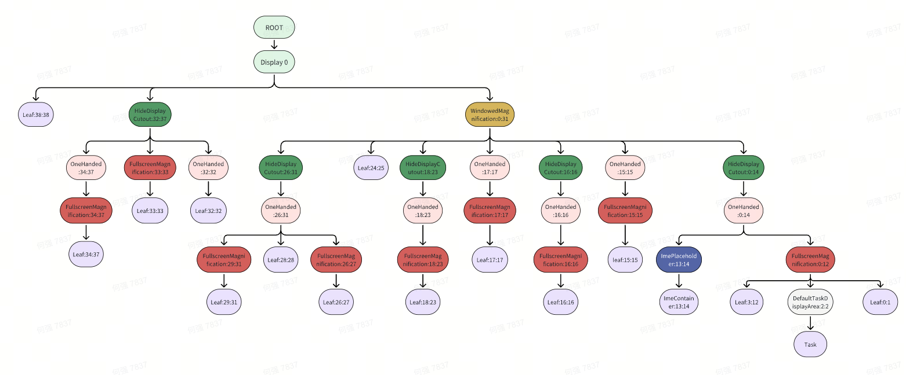

整体构建流程
窗口容器树基本结构在系统启动后是已经构建好的，后续启动应用时会把对应的窗口加到容器树对应的位置。
下面是构建窗口层级树的代码调用流程：
SystemServer.main
SystemServer.run
SystemServer.startOtherServices
WindowManagerService.main
WindowManagerService.<init>
new RootWindowContainer
ActivityManagerService.setWindowManager
ActivityTaskManagerService.setWindowManager
RootWindowContainer.setWindowManager
DisplayContent.<init>
DisplayContent.configureSurfaces
DisplayAreaPolicy$DefaultProvider.instantiate
// 创建 DefaultTaskDisplayArea，后面设置给 HierarchyBuilder
defaultTaskDisplayArea = new TaskDisplayArea
// 创建窗口层级结构生成器
rootHierarchy = new HierarchyBuilder
HierarchyBuilder.setImeContainer
HierarchyBuilder.setTaskDisplayAreas(defaultTaskDisplayArea)
// 为 rootHierarchy 配置Feature
DisplayAreaPolicy$DefaultProvider.configureTrustedHierarchyBuilder(rootHierarchy)
// 将 rootHierarchy 设置给 DisplayAreaPolicyBuilder，用于构建窗口层级
DisplayAreaPolicyBuilder().setRootHierarchy(rootHierarchy)
DisplayAreaPolicyBuilder.build
DisplayAreaPolicyBuilder$HierarchyBuilder.build
// 构建 featureAreas
//把前面创建的 DefaultTaskDisplayArea 添加 TaskDisplayArea 到应用程序层级
DisplayAreaPolicyBuilder$HierarchyBuilder.addTaskDisplayAreasToApplicationLayer
DisplayAreaPolicyBuilder$HierarchyBuilder.addDisplayAreaGroupsToApplicationLayer
// 计算叶子节点
// 计算MaxLayer
PendingArea.computeMaxLayer
PendingArea.instantiateChildren // 开始递归构建层级树，看后面代码分析
RootDisplayArea.onHierarchyBuilt // 构建完成，看后面代码分析
// 获取 DefaultTaskDisplayArea
RootWindowContainer.getDefaultTaskDisplayArea()
// 创建 RootTask
TaskDisplayArea.getOrCreateRootHomeTask()
TaskDisplayArea.createRootTask
Task$Builder.build
TaskDisplayArea.addChild
TaskDisplayArea.addChildTask
WindowContainer.addChild
构建流程分析
窗口构建流程其实就是把配置好的 Feature 转换为对应 DisplayArea 的过程。
配置Feature
介绍配置 Feature 的流程之前，先来介绍一下 Feature。
Feature介绍
Feature 代表的是 DisplayArea 的一个特征，可以根据 Feature 来对不同的 DisplayArea 进行划分。
这样做主要是为了方便一些共同特性的顶部容器进行统一操作，比如单手模式功能，他就可以只遍历单手相关的容器，然后进行相关操作。这个功能具体可以参考上一篇博客。
层级树中一共就出现了5个Feature就是在 configureTrustedHierarchyBuilder 方法中配置的，分别如下：
- WindowedMagnification：支持窗口缩放的一块区域，一般是通过辅助服务进行缩小或放大
- HideDisplayCutout：隐藏剪切区域，即在默认显示设备上隐藏不规则形状的屏幕区域，比如在代码中打开这个功能后，有这个功能的图层就不会延伸到刘海屏区域。
- OneHanded：表示支持单手操作的图层
- FullscreenMagnification：支持全屏幕缩放的图层，和上面的不同，这个是全屏缩放，前面那个可以局部
- ImePlaceholder：输入法相关
private void configureTrustedHierarchyBuilder(HierarchyBuilder rootHierarchy,
WindowManagerService wmService, DisplayContent content) {
rootHierarchy.addFeature(new Feature.Builder(wmService.mPolicy, "WindowedMagnification",
FEATURE_WINDOWED_MAGNIFICATION)
.upTo(TYPE_ACCESSIBILITY_MAGNIFICATION_OVERLAY)
.except(TYPE_ACCESSIBILITY_MAGNIFICATION_OVERLAY)
.setNewDisplayAreaSupplier(DisplayArea.Dimmable::new)
.build());
if (content.isDefaultDisplay) {
rootHierarchy.addFeature(new Feature.Builder(wmService.mPolicy, "HideDisplayCutout",
FEATURE_HIDE_DISPLAY_CUTOUT)
......
.addFeature(new Feature.Builder(wmService.mPolicy, "OneHanded",
FEATURE_ONE_HANDED)
......
}
rootHierarchy
.addFeature(new Feature.Builder(wmService.mPolicy, "FullscreenMagnification",
FEATURE_FULLSCREEN_MAGNIFICATION)
.all()
......
.addFeature(new Feature.Builder(wmService.mPolicy, "ImePlaceholder",
FEATURE_IME_PLACEHOLDER)
.and(TYPE_INPUT_METHOD, TYPE_INPUT_METHOD_DIALOG)
.build());
}
}
这个方法移动执行了 5 次 addFeature，所以就构建了 5 个 Feature。
// DisplayAreaPolicyBuilder.Feature
static class Feature {
private final String mName;
private final int mId;
private final boolean[] mWindowLayers;
private final NewDisplayAreaSupplier mNewDisplayAreaSupplier;
private Feature(String name, int id, boolean[] windowLayers,
NewDisplayAreaSupplier newDisplayAreaSupplier) {
mName = name;
mId = id;
mWindowLayers = windowLayers;
mNewDisplayAreaSupplier = newDisplayAreaSupplier;
}
//DisplayAreaPolicyBuilder.Feature.Builder
Builder(WindowManagerPolicy policy, String name, int id) {
mPolicy = policy;
mName = name; //
mId = id;
mLayers = new boolean[mPolicy.getMaxWindowLayer() + 1];
}
参数 mName 就是前面 addFeature 时传入的字符串。如上面的“WindowedMagnification”，“HideDisplayCutout”之类的，后续 DisplayArea 层级结构建立起来后，每个 DisplayArea 的名字用的就是当前 DisplayArea 对应的那个 Feature 的名字。
参数 mId 的定义在 DisplayAreaOrganizer 中。
//DisplayAreaOrganizer.java
public static final int FEATURE_ONE_HANDED = FEATURE_SYSTEM_FIRST + 3;
public static final int FEATURE_WINDOWED_MAGNIFICATION = FEATURE_SYSTEM_FIRST + 4;
public static final int FEATURE_FULLSCREEN_MAGNIFICATION = FEATURE_SYSTEM_FIRST + 5;
public static final int FEATURE_HIDE_DISPLAY_CUTOUT = FEATURE_SYSTEM_FIRST + 6;
public static final int FEATURE_IME_PLACEHOLDER = FEATURE_SYSTEM_FIRST + 7;
参数 mLayers 构建了数组，长度为 39，代表了这个DisplayArea可以包含哪些层级对应的窗口。如果为ture表示这个图层支持这个Feature，为false则不支持。
再来介绍一下 Builder 的 all()、and()、except()、upTo()等方法
//DisplayAreaPolicyBuilder.Feature.Builder
Builder all() {
Arrays.fill(mLayers, true);
return this;
}
Builder and(int... types) {
for (int i = 0; i < types.length; i++) {
int type = types[i];
set(type, true);
}
return this;
}
Builder except(int... types) {
for (int i = 0; i < types.length; i++) {
int type = types[i];
set(type, false);
}
return this;
}
Builder upTo(int typeInclusive) {
final int max = layerFromType(typeInclusive, false);
for (int i = 0; i < max; i++) {
mLayers[i] = true;
}
set(typeInclusive, true);
return this;
}
private void set(int type, boolean value) {
mLayers[layerFromType(type, true)] = value;
if (type == TYPE_APPLICATION_OVERLAY) {
mLayers[layerFromType(type, true)] = value;
mLayers[layerFromType(TYPE_SYSTEM_ALERT, false)] = value;
mLayers[layerFromType(TYPE_SYSTEM_OVERLAY, false)] = value;
mLayers[layerFromType(TYPE_SYSTEM_ERROR, false)] = value;
}
}
// 窗口类型到层级数的转化
private int layerFromType(int type, boolean internalWindows) {
return mPolicy.getWindowLayerFromTypeLw(type, internalWindows);
}
Feature build() {
if (mExcludeRoundedCorner) {
// 由于 mExcludeRoundedCorner 为 true，这里默认都会把最后一层设置为 false。
mLayers[mPolicy.getMaxWindowLayer()] = false;
}
return new Feature(mName, mId, mLayers.clone(), mNewDisplayAreaSupplier);
}
mLayers 前面说过是一个长度为39的数组，上面列举的方法就是对 mLayers 进行赋值操作。
- set方法就是将参数的这个图层，对应的boolean设置为true， 换句话说就是指定某个图层是否支持这个Feature。
- all()：将所有数组所有值都设为true，表示每个图层都支持这个Feature
- and(): 将指定某个图层支持这个Feature
- except（）：将指定某个图层不支持这个Feature
- upTo(): 将支持Feature的图层设置为从0到typeInclusive
- layerFromType：根据应用窗口的类型，返回窗口层级树中所在图层的类型。
判断窗口挂载在窗口层级树哪一层
调用了getWindowLayerFromTypeLw来实现窗口类型到层级数的转化，来判断窗口挂载在窗口层级树哪一层。
// WindowManagerPolicy.java
default int getWindowLayerFromTypeLw(int type, boolean canAddInternalSystemWindow,
boolean roundedCornerOverlay) {
// Always put the rounded corner layer to the top most.
if (roundedCornerOverlay && canAddInternalSystemWindow) {
return getMaxWindowLayer();
}
// APP图层，对应的值是1-99，如果处于这直接就返回APPLICATION_LAYER =2
// 包含 FIRST_APPLICATION_WINDOW、TYPE_BASE_APPLICATION、TYPE_APPLICATION
// TYPE_APPLICATION_STARTING、TYPE_DRAWN_APPLICATION 类型的窗口
if (type >= FIRST_APPLICATION_WINDOW && type <= LAST_APPLICATION_WINDOW) {
return APPLICATION_LAYER;
}
// 然后开始根据各个WindowType，去返回其在层级树中所在的图层
switch (type) {
case TYPE_WALLPAPER:
// 壁纸层
return 1;
case TYPE_PRESENTATION:
case TYPE_PRIVATE_PRESENTATION:
case TYPE_DOCK_DIVIDER:
case TYPE_QS_DIALOG:
case TYPE_PHONE:
return 3;
case TYPE_SEARCH_BAR:
return 4;
case TYPE_INPUT_CONSUMER:
return 5;
case TYPE_SYSTEM_DIALOG:
return 6;
case TYPE_TOAST:
// toasts and the plugged-in battery thing
return 7;
case TYPE_PRIORITY_PHONE:
// SIM errors and unlock. Not sure if this really should be in a high layer.
return 8;
case TYPE_SYSTEM_ALERT:
// like the ANR / app crashed dialogs
// Type is deprecated for non-system apps. For system apps, this type should be
// in a higher layer than TYPE_APPLICATION_OVERLAY.
return canAddInternalSystemWindow ? 12 : 9;
case TYPE_APPLICATION_OVERLAY:
return 11;
case TYPE_INPUT_METHOD:
// on-screen keyboards and other such input method user interfaces go here.
return 13;
case TYPE_INPUT_METHOD_DIALOG:
// on-screen keyboards and other such input method user interfaces go here.
return 14;
case TYPE_STATUS_BAR:
return 15;
case TYPE_STATUS_BAR_ADDITIONAL:
return 16;
case TYPE_NOTIFICATION_SHADE:
return 17;
case TYPE_STATUS_BAR_SUB_PANEL:
return 18;
case TYPE_KEYGUARD_DIALOG:
return 19;
case TYPE_VOICE_INTERACTION_STARTING:
return 20;
case TYPE_VOICE_INTERACTION:
// voice interaction layer should show above the lock screen.
return 21;
case TYPE_VOLUME_OVERLAY:
// the on-screen volume indicator and controller shown when the user
// changes the device volume
return 22;
case TYPE_SYSTEM_OVERLAY:
// the on-screen volume indicator and controller shown when the user
// changes the device volume
return canAddInternalSystemWindow ? 23 : 10;
case TYPE_NAVIGATION_BAR:
// the navigation bar, if available, shows atop most things
return 24;
case TYPE_NAVIGATION_BAR_PANEL:
// some panels (e.g. search) need to show on top of the navigation bar
return 25;
case TYPE_SCREENSHOT:
// screenshot selection layer shouldn't go above system error, but it should cover
// navigation bars at the very least.
return 26;
case TYPE_SYSTEM_ERROR:
// system-level error dialogs
return canAddInternalSystemWindow ? 27 : 9;
case TYPE_MAGNIFICATION_OVERLAY:
// used to highlight the magnified portion of a display
return 28;
case TYPE_DISPLAY_OVERLAY:
// used to simulate secondary display devices
return 29;
case TYPE_DRAG:
// the drag layer: input for drag-and-drop is associated with this window,
// which sits above all other focusable windows
return 30;
case TYPE_ACCESSIBILITY_OVERLAY:
// overlay put by accessibility services to intercept user interaction
return 31;
case TYPE_ACCESSIBILITY_MAGNIFICATION_OVERLAY:
return 32;
case TYPE_SECURE_SYSTEM_OVERLAY:
return 33;
case TYPE_BOOT_PROGRESS:
return 34;
case TYPE_POINTER:
// the (mouse) pointer layer
return 35;
case TYPE_SYSTEM_DRAGDROP_OVERLAY:
// Device Integration: the drag drop layer
return 36;
case TYPE_SYSTEM_BLACKSCREEN_OVERLAY:
// Device Integration: the black screen layer
return 37;
default:
Slog.e("WindowManager", "Unknown window type: " + type);
return 3;
}
}
上面的 TYPE_* 是不是看到和我们熟悉的窗口类型，如 TYPE_WALLPAPER，TYPE_NAVIGATION_BAR 等，其实他们都是有固定的一个层级的。即 windowType 的值并不是真正层级数目，都是需要通过这个方法进行转化才是真正层级数。
代码中窗口的类型，可以在 WindowManager 中找到。
Feature 配置
现在再来看一下 Feature 是如何配置的。
private void configureTrustedHierarchyBuilder(HierarchyBuilder rootHierarchy,
WindowManagerService wmService, DisplayContent content) {
//
rootHierarchy.addFeature(new Feature.Builder(wmService.mPolicy, "WindowedMagnification",
FEATURE_WINDOWED_MAGNIFICATION)
// TYPE_ACCESSIBILITY_MAGNIFICATION_OVERLAY 对应的图层是 32，那么这里就把 0-32 层设置为true
.upTo(TYPE_ACCESSIBILITY_MAGNIFICATION_OVERLAY)
// 去掉 32 层
.except(TYPE_ACCESSIBILITY_MAGNIFICATION_OVERLAY)
.setNewDisplayAreaSupplier(DisplayArea.Dimmable::new)
.build());// WindowedMagnification 的层级 0-31
if (content.isDefaultDisplay) {
rootHierarchy.addFeature(new Feature.Builder(wmService.mPolicy, "HideDisplayCutout",
FEATURE_HIDE_DISPLAY_CUTOUT)
// 0-38
.all()
// 去掉这几个窗口类型对应层级 24、25、15、17
.except(TYPE_NAVIGATION_BAR, TYPE_NAVIGATION_BAR_PANEL, TYPE_STATUS_BAR,
TYPE_NOTIFICATION_SHADE)
.build()) // HideDisplayCutout 对应层级 0-14 16 18-23 26-37
.addFeature(new Feature.Builder(wmService.mPolicy, "OneHanded",
FEATURE_ONE_HANDED)
// 0-38
.all()
// 去掉对应的层级 24 25 33
.except(TYPE_NAVIGATION_BAR, TYPE_NAVIGATION_BAR_PANEL,
TYPE_SECURE_SYSTEM_OVERLAY)
.build()); // OneHanded 对应的层级 0-23 26-32 34-37
}
rootHierarchy
.addFeature(new Feature.Builder(wmService.mPolicy, "FullscreenMagnification",
FEATURE_FULLSCREEN_MAGNIFICATION)
// 0-38
.all()
// 去掉对应的层级 32 13 14 28 24 25
.except(TYPE_ACCESSIBILITY_MAGNIFICATION_OVERLAY, TYPE_INPUT_METHOD,
TYPE_INPUT_METHOD_DIALOG, TYPE_MAGNIFICATION_OVERLAY,
TYPE_NAVIGATION_BAR, TYPE_NAVIGATION_BAR_PANEL)
.build()) // FullscreenMagnification 对应层级 0-12 15-23 26-27 29-31 33-37
.addFeature(new Feature.Builder(wmService.mPolicy, "ImePlaceholder",
FEATURE_IME_PLACEHOLDER)
// 添加窗口对应的层级 13 14
.and(TYPE_INPUT_METHOD, TYPE_INPUT_METHOD_DIALOG)
.build()); // ImePlaceholder 对应的层级 13-14
}
}
| 名称 | 特征描述 | 拥有特征的层级 |
|---|---|---|
| WindowedMagnification | 支持窗口缩放的一块区域，一般是通过辅助服务进行缩小或放大 | 0-31 |
| HideDisplayCutout | 隐藏剪切区域，即在默认显示设备上隐藏不规则形状的屏幕区域，比如在代码中打开这个功能后，有这个功能的图层就不会延伸到刘海屏区域。 | 0-14 16 18-23 26-37 |
| OneHanded | 表示支持单手操作的图层 | 0-23 26-32 34-37 |
| FullscreenMagnification | 支持全屏幕缩放的图层，和上面的不同，这个是全屏缩放，前面那个可以局部 | 0-12 15-23 26-27 29-31 33-37 |
| ImePlaceholder | 输入法相关 | 13-14 |
构建层级树
上面只是将5个 Feature 添加到了 rootHierarchy 的 mFeatures 这个集合中，将 rootHierarchy 设置给 DisplayAreaPolicyBuilder 后就可以构建窗口层级树了。
static class HierarchyBuilder {
private final ArrayList<DisplayAreaPolicyBuilder.Feature> mFeatures = new ArrayList<>();
HierarchyBuilder addFeature(DisplayAreaPolicyBuilder.Feature feature) {
mFeatures.add(feature);
return this;
}
构建层级树可以归纳为下面两个步骤：
- 构建 PendingArea 树
- 构建 Feature 相关
- 构建 Leaf 相关
- 根据 PendingArea 树构建最终的 DisplayAreas 树，也就是层级树
这部分代码主要在 DisplayAreaPolicyBuilder$HierarchyBuilder.build 中。
窗口层级树的构建由 DisplayContent 构造函数中发起，mWmService.getDisplayAreaPolicyProvider().instantiate()，也就是说没创建一个显示设备（包含虚拟屏幕），都会发起一次窗口层级树的构建。
构建 PendingArea 树
static class PendingArea {
// 最小层级
final int mMinLayer;
// 子节点集合，有Children说明也是一个容器
final ArrayList<PendingArea> mChildren = new ArrayList<>();
// 当前支持的Feature
final Feature mFeature;
// 父节点
final PendingArea mParent;
// 最大层级
int mMaxLayer;
// 当前存在的容器
@Nullable DisplayArea mExisting;
//是否省略构建 DisplayArea.Tokens，只有LEAF_TYPE_IME_CONTAINERS 输入法和HierarchyBuilder#LEAF_TYPE_TASK_CONTAINERS 应用会为true
boolean mSkipTokens = false;
PendingArea(Feature feature, int minLayer, PendingArea parent) {
mMinLayer = minLayer;
mFeature = feature;
mParent = parent;
}
PendingArea 的数据结构可以使它组成一个双向列表，用来表示窗口的层级树。
private void build(@Nullable List<HierarchyBuilder> displayAreaGroupHierarchyBuilders) {
final WindowManagerPolicy policy = mRoot.mWmService.mPolicy;
// 定义最大层级数 39 = 38+1
final int maxWindowLayerCount = policy.getMaxWindowLayer() + 1;
// 创建长度为 39 的 DisplayArea.Tokens 数组，存储每个窗口层级对应的 DisplayArea.Tokens,
// 后续窗口挂载也是在这个数据结构上找，在方法底部执行instantiateChildren的时候调用
final DisplayArea.Tokens[] displayAreaForLayer =
new DisplayArea.Tokens[maxWindowLayerCount];
// 存储每个 Feature 对应的 DisplayArea 列表
// mFeatures就是在configureTrustedHierarchyBuilder配置的Feature，一共是5个
final Map<Feature, List<DisplayArea<WindowContainer>>> featureAreas =
new ArrayMap<>(mFeatures.size());
for (int i = 0; i < mFeatures.size(); i++) {
featureAreas.put(mFeatures.get(i), new ArrayList<>());
}
// 从这里开始构建 PendingArea 树 -------->
// 创建 PendingArea 数组，用于临时存储每个窗口层级对应的 PendingArea，也是39个
PendingArea[] areaForLayer = new PendingArea[maxWindowLayerCount];
// 创建一个默认的 PendingArea，用来初始化 areaForLayer 数组，改数组中此时时同一个默认的 PendingArea 对象
final PendingArea root = new PendingArea(null, 0, null);
Arrays.fill(areaForLayer, root);
上面部分代码主要做一些构建前的初始化准备工作。
初始化完成后， 得到 areaForLayer 数据如下，这里我们使用 ROOT 来代替 areaForLayer 初始化的 PendingArea 。
| PendingArea数组(areaForLayer[39]) | 初始化(mFeature.mName: mMinLayer: mMaxLayer) |
|---|---|
| areaForLayer[0] | ROOT:0:0 |
| ...... | |
| areaForLayer[38] | ROOT:0:0 |
// 构建 Feature 树，这里size 为 5，因此会有5个大循环，具体下面详细介绍
final int size = mFeatures.size();
for (int i = 0; i < size; i++) {
// 拿到当前需要处理的Feature
final Feature feature = mFeatures.get(i);
PendingArea featureArea = null;
// 内部循环 39 次
for (int layer = 0; layer < maxWindowLayerCount; layer++) {
// 如果这个层级，前面配置的支持当前Feature
if (feature.mWindowLayers[layer]) {
// This feature will be applied to this window layer.
//
// We need to find a DisplayArea for it:
// We can reuse the existing one if it was created for this feature for the
// previous layer AND the last feature that applied to the previous layer is
// the same as the feature that applied to the current layer (so they are ok
// to share the same parent DisplayArea).
// 这里会为当前的层级配置 PendingArea
if (featureArea == null || featureArea.mParent != areaForLayer[layer]) {
// No suitable DisplayArea:
// Create a new one under the previous area (as parent) for this layer.
// 如果 featureArea 为空，或者当前已有的 featureArea 的父节点不是当前层级的 PendingArea，
// 那么就创建一个新的 PendingArea，父节点设置为当前层级的 PendingArea
featureArea = new PendingArea(feature, layer, areaForLayer[layer]);
// 并把它设置为当前层级的 PendingArea 的孩子节点
areaForLayer[layer].mChildren.add(featureArea);
}
// 把刚才创建的 PendingArea 更新到 areaForLayer数组中，由于刚才创建 featureArea 时设置了它的父节点，那么就创建了这个链条关系
areaForLayer[layer] = featureArea;
} else {
// 如果该特性不应用于当前窗口层级，则featureArea置为空。用于下一次循环时上面if的判断
featureArea = null;
}
}
}
下面我们结合实际的流程来看看这段代码的实现。
1.WindowedMagnification
第一次 for 循环时。
第一步，WindowedMagnification 的 mWindowLayers[0] = true。满足第一个if条件，因为刚开始的 featureArea 为空，满足第二个 if 条件。
创建一个 new PendingArea(WindowedMagnification, 0, areaForLayer[0])，并把它的 mFeature 设置为 WindowedMagnification， mMinLayer 设置为0，mParent 设置为数组默认的那个 PendingArea，也就是 areaForLayer[0] (ROOT:0:0)，（前面初始化时areaForLayer[0]-areaForLayer[39]全部都为ROOT节点）。
然后把上面创建的 PendingArea 加入到 areaForLayer[0] (ROOT:0:0) 的子节点 mChildren 列表中。
第二步，areaForLayer[layer] = featureArea;，把 areaForLayer[0] 更新为刚才创建的 PendingArea，WindowedMagnification:0:0，由于刚才创建 PendingArea 时设置了它的父节点为原始数组中默认的那个 areaForLayer[0] (ROOT:0:0)，那么就创建了这个链条关系。
第二次 for 循环时。
第一步，WindowedMagnification的 mWindowLayers[1] = true。满足第一个if条件，featureArea 不为空，而且当前 featureArea.mParent 是 WindowedMagnification:0:0 的父亲即 (ROOT:0:0)，而 mWindowLayers[1] 的父节点也是刚开始初始化的 (ROOT:0:0)，两者相等，因此不满足 if 条件，不会去创建新的 PendingArea。
第二步，直接把当前的 featureArea 设置给 mWindowLayers[1]。
后面的 for 循环。
因为前面配置Feature时WindowedMagnification是0-31为true，后面的循环一直到31，都和第二次 for 循环是应用的。32及其以后得全部置为空。
因此这一次 for 循环只创建了一个 PendingArea，放到mWindowLayers[0-31]中，mWindowLayers[31-39]中还是初始的那个值 (ROOT:0:0)。
经过这一次循环，数组中的数据如下：
| PendingArea数组 areaForLayer | ROOT | WindowedMagnification |
|---|---|---|
| areaForLayer[0] | ROOT:0:0 | WindowedMagnification:0:0 |
| ...... | ROOT:0:0 | WindowedMagnification:0:0 |
| areaForLayer[31] | ROOT:0:0 | WindowedMagnification:0:0 |
| areaForLayer[32] | ROOT:0:0 | null |
| ...... | ROOT:0:0 | null |
| areaForLayer[38] | ROOT:0:0 | null |
用如下的树形结构图表示：

2.HideDisplayCutout
第一次 for 循环时。
第一步，HideDisplayCutout 的 mWindowLayers[0]=true。HideDisplayCutout是HideDisplayCutout 0-14 16 18-23 26-37为true，满足第一个if条件，前面为 WindowedMagnification 配置时，后面几次 for 循环把 featureArea 置空，因此，这里的第一步 featureArea 为空，满足第二个if条件。featureArea = new PendingArea(feature, layer, areaForLayer[layer]); 创建一个新的 PendingArea(HideDisplayCutout, 0, areaForLayer[0]，由于前面 WindowedMagnification 配置时把 areaForLayer[0-31] 设置为 WindowedMagnification:0:0，那么新的 featureArea 的父节点就是 （WindowedMagnification:0:0）。
areaForLayer[0].mChildren.add(featureArea); 把上面创建的 featureArea (HideDisplayCutout:0:0) 添加到 areaForLayer[0] 也就是 （WindowedMagnification:0:0）的子节点列表中。
第二步，areaForLayer[0] = featureArea;，把areaForLayer[0]更新为HideDisplayCutout:0:0。
第二次 for 循环时。
第一步，HideDisplayCutout 的 mWindowLayers[1] = true。满足第一个if条件，featureArea 不为空，而且当前 featureArea.mParent 是 WindowedMagnification:0:0 ，而 mWindowLayers[1] 的父节点也是 (WindowedMagnification:0:0)，两者相等，因此不满足 if 条件，不会去创建新的 PendingArea。
第二步，直接把当前的 featureArea 设置给 mWindowLayers[1]。
后面的 for 循环一直到 14 都是如此，到这里也是只创建了一个新的 PendingArea (HideDisplayCutout:0:0)。
后面的 15、17、24、25、38次循环，mWindowLayers[layer]都是false，那么都会将 featureArea置为空。
后面的第 16、18、26 次循环，都会创建新的 (HideDisplayCutout:16:0)、 (HideDisplayCutout:18:0)、 (HideDisplayCutout:26:0)，设置给当前的areaForLayer，并且它们的父节点都是 WindowedMagnification:0:0。
从第32次循环开始，
第一步，HideDisplayCutout 的 mWindowLayers[1] = true。满足第一个if条件，featureArea 不为空，注意，后面的 featureArea.mParent != areaForLayer[layer] 这里的判断就和前面不一样了，由于当前 featureArea 的父节点是 WindowedMagnification:0:0，但是 mWindowLayers[32] 的父节点却是 ROOT:0:0，因为前面 WindowedMagnification 只到了 31，所以这里满足了 if 条件，会去创建新的 PendingArea (HideDisplayCutout:32:0)
3.OneHanded、FullscreenMagnification、ImePlaceholder
后面三种 Feature的构建是同样的道理，这里就不详细介绍了，到目前位置层级树可以用下表表示：
| PendingArea数组 areaForLayer | ROOT | WindowedMagnification | HideDisplayCutout | OneHanded | FullscreenMagnification | ImePlaceholder |
|---|---|---|---|---|---|---|
| areaForLayer[0] | ROOT:0:0 | WindowedMagnification:0:0 | HideDisplayCutout:0:0 | OneHanded:0:0 | FullscreenMagnification:0:0 | null |
| ...... | ROOT:0:0 | WindowedMagnification:0:0 | HideDisplayCutout:0:0 | OneHanded:0:0 | FullscreenMagnification:0:0 | null |
| areaForLayer[12] | ROOT:0:0 | WindowedMagnification:0:0 | HideDisplayCutout:0:0 | OneHanded:0:0 | FullscreenMagnification:0:0 | null |
| areaForLayer[13] | ROOT:0:0 | WindowedMagnification:0:0 | HideDisplayCutout:0:0 | OneHanded:0:0 | null | ImePlaceholder:13:0 |
| areaForLayer[14] | ROOT:0:0 | WindowedMagnification:0:0 | HideDisplayCutout:0:0 | OneHanded:0:0 | null | ImePlaceholder:13:0 |
| areaForLayer[15] | ROOT:0:0 | WindowedMagnification:0:0 | null | OneHanded:15:0 | FullscreenMagnification:15:0 | null |
| areaForLayer[16] | ROOT:0:0 | WindowedMagnification:0:0 | HideDisplayCutout:16:0 | OneHanded:16:0 | FullscreenMagnification:16:0 | null |
| areaForLayer[17] | ROOT:0:0 | WindowedMagnification:0:0 | null | OneHanded:17:0 | FullscreenMagnification:16:0 | null |
| areaForLayer[18] | ROOT:0:0 | WindowedMagnification:0:0 | HideDisplayCutout:18:0 | OneHanded:18:0 | FullscreenMagnification:18:0 | null |
| ...... | ROOT:0:0 | WindowedMagnification:0:0 | HideDisplayCutout:18:0 | OneHanded:18:0 | FullscreenMagnification:18:0 | null |
| areaForLayer[23] | ROOT:0:0 | WindowedMagnification:0:0 | HideDisplayCutout:18:0 | OneHanded:18:0 | FullscreenMagnification:18:0 | null |
| areaForLayer[24] | ROOT:0:0 | WindowedMagnification:0:0 | null | null | null | null |
| areaForLayer[25] | ROOT:0:0 | WindowedMagnification:0:0 | null | null | null | null |
| areaForLayer[26] | ROOT:0:0 | WindowedMagnification:0:0 | HideDisplayCutout:26:0 | OneHanded:26:0 | FullscreenMagnification:26:0 | null |
| areaForLayer[27] | ROOT:0:0 | WindowedMagnification:0:0 | HideDisplayCutout:26:0 | OneHanded:26:0 | FullscreenMagnification:26:0 | null |
| areaForLayer[28] | ROOT:0:0 | WindowedMagnification:0:0 | HideDisplayCutout:26:0 | OneHanded:26:0 | null | null |
| areaForLayer[29] | ROOT:0:0 | WindowedMagnification:0:0 | HideDisplayCutout:26:0 | OneHanded:26:0 | FullscreenMagnification:29:0 | null |
| areaForLayer[30] | ROOT:0:0 | WindowedMagnification:0:0 | HideDisplayCutout:26:0 | OneHanded:26:0 | FullscreenMagnification:29:0 | null |
| areaForLayer[31] | ROOT:0:0 | WindowedMagnification:0:0 | HideDisplayCutout:26:0 | OneHanded:26:0 | FullscreenMagnification:29:0 | null |
| areaForLayer[32] | ROOT:0:0 | null | HideDisplayCutout:32:0 | OneHanded:32:0 | null | null |
| areaForLayer[33] | ROOT:0:0 | null | HideDisplayCutout:32:0 | null | null | null |
| areaForLayer[34] | ROOT:0:0 | null | HideDisplayCutout:32:0 | OneHanded:34:0 | FullscreenMagnification:34:0 | null |
| areaForLayer[35] | ROOT:0:0 | null | HideDisplayCutout:32:0 | OneHanded:34:0 | FullscreenMagnification:34:0 | null |
| areaForLayer[36] | ROOT:0:0 | null | HideDisplayCutout:32:0 | OneHanded:34:0 | FullscreenMagnification:34:0 | null |
| areaForLayer[37] | ROOT:0:0 | null | HideDisplayCutout:32:0 | OneHanded:34:0 | FullscreenMagnification:34:0 | null |
| areaForLayer[38] | ROOT:0:0 | null | null | null | null | null |
这里的mMaxLayer尚未计算，后面创建叶子节点后才会计算，我们统一先按算作 0 。
ROOT 表示数组初始化是创建的 PendingArea，表示数组中每个链条的根节点。
用如下的树形结构图表示：

构建 Leaf
// Create Tokens as leaf for every layer.
PendingArea leafArea = null;
int leafType = LEAF_TYPE_TOKENS;
for (int layer = 0; layer < maxWindowLayerCount; layer++) {
//根据层级获取type类型
int type = typeOfLayer(policy, layer);
// Check whether we can reuse the same Tokens with the previous layer. This happens
// if the previous layer is the same type as the current layer AND there is no
// feature that applies to only one of them.
// 判断是否可以重用上一个层级的 PendingArea，如果当前层级和上一个层级类型一样，而且他们的父层级是一样，则可能会重用
// 判断PendingArea对象是否为空 或者 PendingArea对象的父亲不等于当前areaForLayer中的节点 或者 新获取的type和叶子的type不相等
if (leafArea == null || leafArea.mParent != areaForLayer[layer]
|| type != leafType) {
//创建新的叶子节点，互认关系结为父子
leafArea = new PendingArea(null /* feature */, layer, areaForLayer[layer]);
//把新创建的叶子节点放到当前节点的子列表中。
areaForLayer[layer].mChildren.add(leafArea);
leafType = type;
if (leafType == LEAF_TYPE_TASK_CONTAINERS) {
//叶子类型为 LEAF_TYPE_TASK_CONTAINERS 做处理，把前面添加到mTaskDisplayAreas里面的节点也添加到子节点里面去
//因此，当前节点可能会有多个子节点，具体看下面解释
addTaskDisplayAreasToApplicationLayer(areaForLayer[layer]);
addDisplayAreaGroupsToApplicationLayer(areaForLayer[layer],
displayAreaGroupHierarchyBuilders);
leafArea.mSkipTokens = true;
} else if (leafType == LEAF_TYPE_IME_CONTAINERS) {
//叶子类型为LEAF_TYPE_IME_CONTAINERS做处理，下面详细介绍
leafArea.mExisting = mImeContainer;
leafArea.mSkipTokens = true;
}
}
//更新叶子最大层级
leafArea.mMaxLayer = layer;
}
}
先来看看 int type = typeOfLayer(policy, layer); ：
private static int typeOfLayer(WindowManagerPolicy policy, int layer) {
if (layer == APPLICATION_LAYER) {
return LEAF_TYPE_TASK_CONTAINERS;
} else if (layer == policy.getWindowLayerFromTypeLw(TYPE_INPUT_METHOD)
|| layer == policy.getWindowLayerFromTypeLw(TYPE_INPUT_METHOD_DIALOG)) {
return LEAF_TYPE_IME_CONTAINERS;
} else {
return LEAF_TYPE_TOKENS;
}
}
这个方法将39个层级转换为3中类型的 Layer：
- LEAF_TYPE_TASK_CONTAINERS：应用层级，其值为2，Leaf的类型为 LEAF_TYPE_TASK_CONTAINERS。
- LEAF_TYPE_IME_CONTAINERS：输入法层级，其值为13，14，Leaf的类型为 LEAF_TYPE_IME_CONTAINERS。
- 其他层级值对应的Leaf类型为 LEAF_TYPE_TOKENS。
再添加叶子节点的步骤里面，针对 LEAF_TYPE_TASK_CONTAINERS 和 LEAF_TYPE_IME_CONTAINERS 做了特殊处理。
针对 LEAF_TYPE_TASK_CONTAINERS 除了新加叶子节点外，还会添加在 DisplayAreaPolicy$DefaultProvider.instantiate 方法里面通过 HierarchyBuilder.setTaskDisplayAreas(defaultTaskDisplayArea) 添加的 DefaultTaskDisplayArea 节点，因此，这个节点会有多个子节点。
mSkipTokens 是 PendingArea 成员变量，后面构建层级树时调用 createArea() 方法（后面会讲到这个方法）时会判断 mSkipTokens 的值，为 true 就返回 null
也就是说后续在根据 PendingArea 数组生成 DisplayArea 层级结构的时候，就不会为这个 PendingArea 对象生成一个 DisplayArea 对象了。
相当于是用前面已经创建的 TaskDisplayArea 对象替换了为当前节点生成的 Leaf。
private void addTaskDisplayAreasToApplicationLayer(PendingArea parentPendingArea) {
final int count = mTaskDisplayAreas.size();
for (int i = 0; i < count; i++) {
PendingArea leafArea =
new PendingArea(null /* feature */, APPLICATION_LAYER, parentPendingArea);
leafArea.mExisting = mTaskDisplayAreas.get(i);
leafArea.mMaxLayer = APPLICATION_LAYER;
parentPendingArea.mChildren.add(leafArea);
}
}
针对 LEAF_TYPE_IME_CONTAINERS，对应第13，14层级，这里会设置 leafArea.mExisting = mImeContainer;，mImeContainer也是前面在DisplayAreaPolicy$DefaultProvider.instantiate方法设置的，mExisting 是 PendingArea 成员变量，为DisplayArea类型对象，后面构建层级树时调用 createArea() 方法（后面会讲到这个方法）时会判断 mExisting 的值做处理，如果 mExisting 不为空，那么直接用 mExisting ，而不会再重新创建一个 DisplayArea.Tokens 对象，而是用前面已经创建好的mImeContainer。
创建完 Leaf 节点后，更新一下表格：
| PendingArea数组 areaForLayer | ROOT | WindowedMagnification | HideDisplayCutout | OneHanded | FullscreenMagnification | ImePlaceholder | Leaf |
|---|---|---|---|---|---|---|---|
| areaForLayer[0] | ROOT:0:0 | WindowedMagnification:0:0 | HideDisplayCutout:0:0 | OneHanded:0:0 | FullscreenMagnification:0:0 | null | leaf:0:1 |
| areaForLayer[1] | ROOT:0:0 | WindowedMagnification:0:0 | HideDisplayCutout:0:0 | OneHanded:0:0 | FullscreenMagnification:0:0 | null | leaf:0:1 |
| areaForLayer[2] | ROOT:0:0 | WindowedMagnification:0:0 | HideDisplayCutout:0:0 | OneHanded:0:0 | FullscreenMagnification:0:0 | null | DefaultTaskDisplayArea:2:2 |
| areaForLayer[3] | ROOT:0:0 | WindowedMagnification:0:0 | HideDisplayCutout:0:0 | OneHanded:0:0 | FullscreenMagnification:0:0 | null | leaf:3:12 |
| ...... | ROOT:0:0 | WindowedMagnification:0:0 | HideDisplayCutout:0:0 | OneHanded:0:0 | FullscreenMagnification:0:0 | null | leaf:3:12 |
| areaForLayer[12] | ROOT:0:0 | WindowedMagnification:0:0 | HideDisplayCutout:0:0 | OneHanded:0:0 | FullscreenMagnification:0:0 | null | leaf:3:12 |
| areaForLayer[13] | ROOT:0:0 | WindowedMagnification:0:0 | HideDisplayCutout:0:0 | OneHanded:0:0 | null | ImePlaceholder:13:0 | mImeContainer:13:14 |
| areaForLayer[14] | ROOT:0:0 | WindowedMagnification:0:0 | HideDisplayCutout:0:0 | OneHanded:0:0 | null | ImePlaceholder:13:0 | mImeContainer:13:14 |
| areaForLayer[15] | ROOT:0:0 | WindowedMagnification:0:0 | null | OneHanded:15:0 | FullscreenMagnification:15:0 | null | leaf:15:15 |
| areaForLayer[16] | ROOT:0:0 | WindowedMagnification:0:0 | HideDisplayCutout:16:0 | OneHanded:16:0 | FullscreenMagnification:16:0 | null | leaf:16:16 |
| areaForLayer[17] | ROOT:0:0 | WindowedMagnification:0:0 | null | OneHanded:17:0 | FullscreenMagnification:16:0 | null | leaf:17:17 |
| areaForLayer[18] | ROOT:0:0 | WindowedMagnification:0:0 | HideDisplayCutout:18:0 | OneHanded:18:0 | FullscreenMagnification:18:0 | null | leaf:18:23 |
| ...... | ROOT:0:0 | WindowedMagnification:0:0 | HideDisplayCutout:18:0 | OneHanded:18:0 | FullscreenMagnification:18:0 | null | leaf:18:23 |
| areaForLayer[23] | ROOT:0:0 | WindowedMagnification:0:0 | HideDisplayCutout:18:0 | OneHanded:18:0 | FullscreenMagnification:18:0 | null | leaf:18:23 |
| areaForLayer[24] | ROOT:0:0 | WindowedMagnification:0:0 | null | null | null | null | leaf:24:25 |
| areaForLayer[25] | ROOT:0:0 | WindowedMagnification:0:0 | null | null | null | null | leaf:24:25 |
| areaForLayer[26] | ROOT:0:0 | WindowedMagnification:0:0 | HideDisplayCutout:26:0 | OneHanded:26:0 | FullscreenMagnification:26:0 | null | leaf:26:27 |
| areaForLayer[27] | ROOT:0:0 | WindowedMagnification:0:0 | HideDisplayCutout:26:0 | OneHanded:26:0 | FullscreenMagnification:26:0 | null | leaf:26:27 |
| areaForLayer[28] | ROOT:0:0 | WindowedMagnification:0:0 | HideDisplayCutout:26:0 | OneHanded:26:0 | null | null | leaf:28:28 |
| areaForLayer[29] | ROOT:0:0 | WindowedMagnification:0:0 | HideDisplayCutout:26:0 | OneHanded:26:0 | FullscreenMagnification:29:0 | null | leaf:29:31 |
| areaForLayer[30] | ROOT:0:0 | WindowedMagnification:0:0 | HideDisplayCutout:26:0 | OneHanded:26:0 | FullscreenMagnification:29:0 | null | leaf:29:31 |
| areaForLayer[31] | ROOT:0:0 | WindowedMagnification:0:0 | HideDisplayCutout:26:0 | OneHanded:26:0 | FullscreenMagnification:29:0 | null | leaf:29:31 |
| areaForLayer[32] | ROOT:0:0 | null | HideDisplayCutout:32:0 | OneHanded:32:0 | null | null | leaf:32:32 |
| areaForLayer[33] | ROOT:0:0 | null | HideDisplayCutout:32:0 | null | null | null | leaf:33:33 |
| areaForLayer[34] | ROOT:0:0 | null | HideDisplayCutout:32:0 | OneHanded:34:0 | FullscreenMagnification:34:0 | null | leaf:34:37 |
| areaForLayer[35] | ROOT:0:0 | null | HideDisplayCutout:32:0 | OneHanded:34:0 | FullscreenMagnification:34:0 | null | leaf:34:37 |
| areaForLayer[36] | ROOT:0:0 | null | HideDisplayCutout:32:0 | OneHanded:34:0 | FullscreenMagnification:34:0 | null | leaf:34:37 |
| areaForLayer[37] | ROOT:0:0 | null | HideDisplayCutout:32:0 | OneHanded:34:0 | FullscreenMagnification:34:0 | null | leaf:34:37 |
| areaForLayer[38] | ROOT:0:0 | null | null | null | null | null | leaf:38:38 |
转换为树状图：

计算MaxLayer
root.computeMaxLayer();
调用的是PendingArea的方法：
int computeMaxLayer() {
for (int i = 0; i < mChildren.size(); i++) {
mMaxLayer = Math.max(mMaxLayer, mChildren.get(i).computeMaxLayer());
}
return mMaxLayer;
}
通过一个递归调用来计算每个层级的 mMaxLayer。
下面简单看一下这个计算流程：
1.首先，root指的就是前面创建的默认的根节点，它有3个子节点，第一个子节点是 WindowedMagnification:0:0，WindowedMagnification:0:0 又有 7 个子节点，第一个子节点是 OneHanded:0:0，OneHanded:0:0 有 1 个子节点 OneHanded:0:0，OneHanded:0:0 有 2 个子节点，第一个子节点是 FullscreenMagnification:0:0，FullscreenMagnification:0:0 有3个子节点，此时已经到了最后一层的叶子节点，递归停止。根据叶子节点的 mMaxLayer，可以算出它的 mMaxLayer = 13.
2.再算OneHanded:0:0的第二个子节点 ImePlaceholder:13:0，它的 mMaxLayer = 14。
3.因此，可以得出 OneHanded:0:0 的 mMaxLayer = 14，改写为 OneHanded:0:14。
4.一次类推，算出所有节点的 mMaxLayer。
更新一下表格：
| PendingArea数组 areaForLayer | ROOT | WindowedMagnification | HideDisplayCutout | OneHanded | FullscreenMagnification | ImePlaceholder | Leaf |
|---|---|---|---|---|---|---|---|
| areaForLayer[0] | ROOT:0:0 | WindowedMagnification:0:31 | HideDisplayCutout:0:14 | OneHanded:0:14 | FullscreenMagnification:0:12 | null | leaf:0:1 |
| areaForLayer[1] | ROOT:0:0 | WindowedMagnification:0:31 | HideDisplayCutout:0:14 | OneHanded:0:14 | FullscreenMagnification:0:12 | null | leaf:0:1 |
| areaForLayer[2] | ROOT:0:0 | WindowedMagnification:0:31 | HideDisplayCutout:0:14 | OneHanded:0:14 | FullscreenMagnification:0:12 | null | DefaultTaskDisplayArea:2:2 |
| areaForLayer[3] | ROOT:0:0 | WindowedMagnification:0:31 | HideDisplayCutout:0:14 | OneHanded:0:14 | FullscreenMagnification:0:12 | null | leaf:3:12 |
| ...... | ROOT:0:0 | WindowedMagnification:0:31 | HideDisplayCutout:0:14 | OneHanded:0:14 | FullscreenMagnification:0:12 | null | leaf:3:12 |
| areaForLayer[12] | ROOT:0:0 | WindowedMagnification:0:31 | HideDisplayCutout:0:14 | OneHanded:0:14 | FullscreenMagnification:0:12 | null | leaf:3:12 |
| areaForLayer[13] | ROOT:0:0 | WindowedMagnification:0:31 | HideDisplayCutout:0:14 | OneHanded:0:14 | null | ImePlaceholder:13:14 | mImeContainer:13:14 |
| areaForLayer[14] | ROOT:0:0 | WindowedMagnification:0:31 | HideDisplayCutout:0:14 | OneHanded:0:14 | null | ImePlaceholder:13:14 | mImeContainer:13:14 |
| areaForLayer[15] | ROOT:0:0 | WindowedMagnification:0:31 | null | OneHanded:15:15 | FullscreenMagnification:15:15 | null | leaf:15:15 |
| areaForLayer[16] | ROOT:0:0 | WindowedMagnification:0:31 | HideDisplayCutout:16:16 | OneHanded:16:16 | FullscreenMagnification:16:17 | null | leaf:16:16 |
| areaForLayer[17] | ROOT:0:0 | WindowedMagnification:0:31 | null | OneHanded:17:17 | FullscreenMagnification:16:17 | null | leaf:17:17 |
| areaForLayer[18] | ROOT:0:0 | WindowedMagnification:0:31 | HideDisplayCutout:18:23 | OneHanded:18:23 | FullscreenMagnification:18:23 | null | leaf:18:23 |
| ...... | ROOT:0:0 | WindowedMagnification:0:31 | HideDisplayCutout:18:23 | OneHanded:18:23 | FullscreenMagnification:18:23 | null | leaf:18:23 |
| areaForLayer[23] | ROOT:0:0 | WindowedMagnification:0:31 | HideDisplayCutout:18:23 | OneHanded:18:23 | FullscreenMagnification:18:23 | null | leaf:18:23 |
| areaForLayer[24] | ROOT:0:0 | WindowedMagnification:0:31 | null | null | null | null | leaf:24:25 |
| areaForLayer[25] | ROOT:0:0 | WindowedMagnification:0:31 | null | null | null | null | leaf:24:25 |
| areaForLayer[26] | ROOT:0:0 | WindowedMagnification:0:31 | HideDisplayCutout:26:31 | OneHanded:26:31 | FullscreenMagnification:26:27 | null | leaf:26:27 |
| areaForLayer[27] | ROOT:0:0 | WindowedMagnification:0:31 | HideDisplayCutout:26:31 | OneHanded:26:31 | FullscreenMagnification:26:27 | null | leaf:26:27 |
| areaForLayer[28] | ROOT:0:0 | WindowedMagnification:0:31 | HideDisplayCutout:26:31 | OneHanded:26:31 | null | null | leaf:28:28 |
| areaForLayer[29] | ROOT:0:0 | WindowedMagnification:0:31 | HideDisplayCutout:26:31 | OneHanded:26:31 | FullscreenMagnification:29:31 | null | leaf:29:31 |
| areaForLayer[30] | ROOT:0:0 | WindowedMagnification:0:31 | HideDisplayCutout:26:31 | OneHanded:26:31 | FullscreenMagnification:29:31 | null | leaf:29:31 |
| areaForLayer[31] | ROOT:0:0 | WindowedMagnification:0:31 | HideDisplayCutout:26:31 | OneHanded:26:31 | FullscreenMagnification:29:31 | null | leaf:29:31 |
| areaForLayer[32] | ROOT:0:0 | null | HideDisplayCutout:32:37 | OneHanded:32:32 | null | null | leaf:32:32 |
| areaForLayer[33] | ROOT:0:0 | null | HideDisplayCutout:32:37 | null | null | null | leaf:33:33 |
| areaForLayer[34] | ROOT:0:0 | null | HideDisplayCutout:32:37 | OneHanded:34:37 | FullscreenMagnification:34:37 | null | leaf:34:37 |
| areaForLayer[35] | ROOT:0:0 | null | HideDisplayCutout:32:37 | OneHanded:34:37 | FullscreenMagnification:34:37 | null | leaf:34:37 |
| areaForLayer[36] | ROOT:0:0 | null | HideDisplayCutout:32:37 | OneHanded:34:37 | FullscreenMagnification:34:37 | null | leaf:34:37 |
| areaForLayer[37] | ROOT:0:0 | null | HideDisplayCutout:32:37 | OneHanded:34:37 | FullscreenMagnification:34:37 | null | leaf:34:37 |
| areaForLayer[38] | ROOT:0:0 | null | null | null | null | null | leaf:38:38 |
开始构建层级树
入参介绍
// DisplayAreaPolicyBuilder.java
// We built a tree of PendingAreas above with all the necessary info to represent the
// hierarchy, now create and attach real DisplayAreas to the root.
root.instantiateChildren(mRoot, displayAreaForLayer, 0, featureAreas);
// Notify the root that we have finished attaching all the DisplayAreas. Cache all the
// feature related collections there for fast access.
mRoot.onHierarchyBuilt(mFeatures, displayAreaForLayer, featureAreas);
层级树的构建就是把前面构建的 PendingArea 转化成 DisplayArea 的过程，这部分主要在 PendingArea.instantiateChildren 方法中完成。
我们先来看一下传入这个方法中的参数，mRoot 是在构建 HierarchyBuilder 中传入的：
static final class DefaultProvider implements DisplayAreaPolicy.Provider {
@Override
public DisplayAreaPolicy instantiate(WindowManagerService wmService,
DisplayContent content, RootDisplayArea root,
DisplayArea.Tokens imeContainer) {
...
final HierarchyBuilder rootHierarchy = new HierarchyBuilder(root);
这里的 root 是在 DisplayContent.configureSurfaces 方法中传入的，指代的是 DisplayContent。
之前构建PendingArea是临时的替身，而DisplayArea是我们现在需要构建的真身。我们曾经以 ROOT:0:0 的方式表现为临时根节点，这里正式变成了 DisplayContent。
// DisplayContent.java
private void configureSurfaces(Transaction transaction) {
......
if (mDisplayAreaPolicy == null) {
// Setup the policy and build the display area hierarchy.
// Build the hierarchy only after creating the surface so it is reparented correctly
mDisplayAreaPolicy = mWmService.getDisplayAreaPolicyProvider().instantiate(
mWmService, this /* content */, this /* root */,
mImeWindowsContainer);
}
displayAreaForLayer 指的是build方法中在前面初始化时创建的数组，用来存储创建的 DisplayArea.Tokens。
final DisplayArea.Tokens[] displayAreaForLayer =
new DisplayArea.Tokens[maxWindowLayerCount];
featureAreas 就是存储了 5 个 Feature 的数组。
instantiateChildren 方法
现在开始看一下 instantiateChildren 这个方法：
void instantiateChildren(DisplayArea<DisplayArea> parent, DisplayArea.Tokens[] areaForLayer,
int level, Map<Feature, List<DisplayArea<WindowContainer>>> areas) {
//1.先根据当前节点的mChildren的mMinLayer（最小层级）进行排序
mChildren.sort(Comparator.comparingInt(pendingArea -> pendingArea.mMinLayer));
//2.循环依次把之前所构建的PendingArea转换为DisplayArea
for (int i = 0; i < mChildren.size(); i++) {
//获取当前mChildren
final PendingArea child = mChildren.get(i);
//PendingArea转换为DisplayArea
final DisplayArea area = child.createArea(parent, areaForLayer);
//PendingArea对象为空，则跳过该次循环
if (area == null) {
// 目前area为null的情况对应的就是createArea方法中mSkipTokens为true的情况，而当前只有TaskDisplayArea和ImeContainer的mSkipTokens为true
continue;
}
//把转换后的DisplayArea加入到其父节点，第一次入参是mRoot对应我们这里的parent，就是添加到DisplayContent
parent.addChild(area, WindowContainer.POSITION_TOP);
if (child.mFeature != null) {
// 当前节点的mFeature不为空（不为空的就是五个Feature类型的节点）,就把该DisplayArea对象加入到当前Feature的List中。
areas.get(child.mFeature).add(area);
}
//3.递归遍历到每个节点，完成整个层级树的转换
child.instantiateChildren(area, areaForLayer, level + 1, areas);
}
}
再看看一下 createArea 方法：
// DisplayAreaPolicyBuilder.java
private DisplayArea createArea(DisplayArea<DisplayArea> parent,
DisplayArea.Tokens[] areaForLayer) {
// 1：type = LEAF_TYPE_TASK_CONTAINERS 和 type = LEAF_TYPE_IME_CONTAINERS 设置过mExisting，直接返回
// 具体见下面分析
if (mExisting != null) {
if (mExisting.asTokens() != null) {
// Store the WindowToken container for layers
fillAreaForLayers(mExisting.asTokens(), areaForLayer);
}
return mExisting;
}
// 2：type = LEAF_TYPE_TASK_CONTAINERS 和 type = LEAF_TYPE_IME_CONTAINERS 设置过true
if (mSkipTokens) {
return null;
}
// 3：将DisplayArea分为三种类型。
DisplayArea.Type type;
if (mMinLayer > APPLICATION_LAYER) {
type = DisplayArea.Type.ABOVE_TASKS;
} else if (mMaxLayer < APPLICATION_LAYER) {
type = DisplayArea.Type.BELOW_TASKS;
} else {
type = DisplayArea.Type.ANY;
}
//4.mFeature为null 直接创建一个DisplayArea.Tokens对象，然后把其填充到areaForLayer数组中。
// 一般来说叶子节点是没有mFeature的
// 还要把它填充到 areaForLayer 数组。
if (mFeature == null) {
final DisplayArea.Tokens leaf = new DisplayArea.Tokens(parent.mWmService, type,
"Leaf:" + mMinLayer + ":" + mMaxLayer);
fillAreaForLayers(leaf, areaForLayer);
return leaf;
} else {
// 调用mFeature.mNewDisplayAreaSupplier来创建DisplayArea，见下面详细介绍
return mFeature.mNewDisplayAreaSupplier.create(parent.mWmService, type,
mFeature.mName + ":" + mMinLayer + ":" + mMaxLayer, mFeature.mId);
}
}
第一步分析：
如果 mExisting != null，就直接返回已经设置的 mExisting。
在前面介绍创建 Leaf 节点时， type = LEAF_TYPE_TASK_CONTAINERS 和 type = LEAF_TYPE_IME_CONTAINERS 为 mExisting 设置了 DisplayArea对象。
//DisplayAreaPolicyBuilder.HierarchyBuilder
private void addTaskDisplayAreasToApplicationLayer(PendingArea parentPendingArea) {
final int count = mTaskDisplayAreas.size();
for (int i = 0; i < count; i++) {
PendingArea leafArea =
new PendingArea(null /* feature */, APPLICATION_LAYER, parentPendingArea);
leafArea.mExisting = mTaskDisplayAreas.get(i);
leafArea.mMaxLayer = APPLICATION_LAYER;
parentPendingArea.mChildren.add(leafArea);
}
}
//DisplayAreaPolicyBuilder.HierarchyBuilder.build
} else if (leafType == LEAF_TYPE_IME_CONTAINERS) {
// We use the passed in ImeContainer for ime container type of layer.
// Skip creating Tokens even if there is no ime container.
leafArea.mExisting = mImeContainer;
leafArea.mSkipTokens = true;
}
if (mExisting.asTokens() != null) { 这里，由于 defaultTaskDisplayArea 是 TaskDisplayArea 对象，他的 asTokens() 方法返回的是 null。mImeContainer 是 ImeContainer 对象，继承自 DisplayArea.Tokens，它的 asTokens() 方法返回的是本身，因此把 mImeContainer 设置给了 areaForLayer 数组对应的13，14层。
private void fillAreaForLayers(DisplayArea.Tokens leaf, DisplayArea.Tokens[] areaForLayer) {
for (int i = mMinLayer; i <= mMaxLayer; i++) {
areaForLayer[i] = leaf;
}
}
第四步分析：分析
这里来说一下 mFeature.mNewDisplayAreaSupplier，mNewDisplayAreaSupplier 是通过 Feature.build() 传入的，默认是 DisplayArea::new，构造DisplayArea对象。
// DisplayAreaPolicyBuilder.Feature
private NewDisplayAreaSupplier mNewDisplayAreaSupplier = DisplayArea::new;
....
Feature build() {
if (mExcludeRoundedCorner) {
// Always put the rounded corner layer to the top most layer.
mLayers[mPolicy.getMaxWindowLayer()] = false;
}
return new Feature(mName, mId, mLayers.clone(), mNewDisplayAreaSupplier);
}
当添加 WindowedMagnification Feature 时是有设置 mNewDisplayAreaSupplier 为 DisplayArea.Dimmable::new。那么这个 Feature 就回去创建 DisplayArea.Dimmable 对象。
// DisplayAreaPolicy.java
private void configureTrustedHierarchyBuilder(HierarchyBuilder rootHierarchy,
WindowManagerService wmService, DisplayContent content) {
rootHierarchy.addFeature(new Feature.Builder(wmService.mPolicy, "WindowedMagnification",
FEATURE_WINDOWED_MAGNIFICATION)
.upTo(TYPE_ACCESSIBILITY_MAGNIFICATION_OVERLAY)
.except(TYPE_ACCESSIBILITY_MAGNIFICATION_OVERLAY)
// Make the DA dimmable so that the magnify window also mirrors the dim layer.
.setNewDisplayAreaSupplier(DisplayArea.Dimmable::new)
.build());
回调 onHierarchyBuilt
把前面构建好的 mFeatures, displayAreaForLayer, featureAreas传递给 RootDisplayArea，层级树构建完毕。
// RootDisplayArea.java
void onHierarchyBuilt(ArrayList<Feature> features, DisplayArea.Tokens[] areaForLayer,
Map<Feature, List<DisplayArea<WindowContainer>>> featureToDisplayAreas) {
if (mHasBuiltHierarchy) {
throw new IllegalStateException("Root should only build the hierarchy once");
}
mHasBuiltHierarchy = true;
mFeatures = Collections.unmodifiableList(features);
// 叶子节点
mAreaForLayer = areaForLayer;
mFeatureToDisplayAreas = featureToDisplayAreas;
}
层级树构建如下图：
创建 RootTask
前面介绍完RootWindowContainer中的 setWindowManager 方法中构建基本的窗口层级树后，这个方法会继续创建一个RootTask用于App启动的时候放置Activity和对应Task。
void setWindowManager(WindowManagerService wm) {
......
final TaskDisplayArea defaultTaskDisplayArea = getDefaultTaskDisplayArea();
defaultTaskDisplayArea.getOrCreateRootHomeTask(ON_TOP);
positionChildAt(POSITION_TOP, defaultTaskDisplayArea.mDisplayContent,
false /* includingParents */);
}
创建的具体流程在上面的流程图中。
调用堆栈：
DefaultTaskDisplayArea@193126876 addChild child = Task{2480f17 #1 type=home}
java.lang.Exception
at com.android.server.wm.WindowContainer.addChild(WindowContainer.java:730)
at com.android.server.wm.TaskDisplayArea.addChildTask(TaskDisplayArea.java:328)
at com.android.server.wm.TaskDisplayArea.addChild(TaskDisplayArea.java:314)
at com.android.server.wm.Task$Builder.build(Task.java:6847)
at com.android.server.wm.TaskDisplayArea.createRootTask(TaskDisplayArea.java:1033)
at com.android.server.wm.TaskDisplayArea.createRootTask(TaskDisplayArea.java:1007)
at com.android.server.wm.TaskDisplayArea.getOrCreateRootHomeTask(TaskDisplayArea.java:1630)
at com.android.server.wm.RootWindowContainer.setWindowManager(RootWindowContainer.java:1320)
at com.android.server.wm.ActivityTaskManagerService.setWindowManager(ActivityTaskManagerService.java:1072)
at com.android.server.am.ActivityManagerService.setWindowManager(ActivityManagerService.java:2189)
at com.android.server.SystemServer.startOtherServices(SystemServer.java:1646)
Task 信息：
DefaultTaskDisplayArea@193126876 addChild child = Task{2480f17 #1 type=home}
对应窗口层级树：
#1 DefaultTaskDisplayArea type=undefined mode=fullscreen override-mode=fullscreen requested-bounds=[0,0][0,0] bounds=[0,0][1080,2340]
#1 Task=1 type=home mode=fullscreen override-mode=undefined requested-bounds=[0,0][0,0] bounds=[0,0][1080,2340]
此时的层级树构建如下图：

小结
至此，基本的窗口层级树是构建完了。但是这个层级树和上一篇看不太一样，那是因为 Leaf 下没有内容了，应用层 DefaultTaskDisplayArea 下面只是创建了一个 RootTask ，壁纸层也没有内容，那是因为 Leaf 后面的内容都是具体业务添加上去的。比如 Task、ActivityRecord 和非 Activity 窗口的 WindowToken 等等。
所以其实对应 Window 的 add 流程，其实也就是真没添加到这个层级树的流程。这些我们后面再分析。